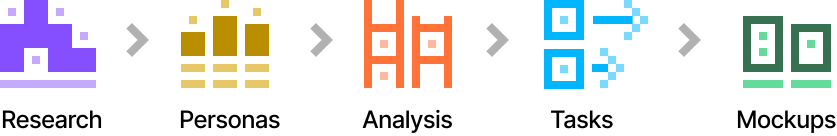
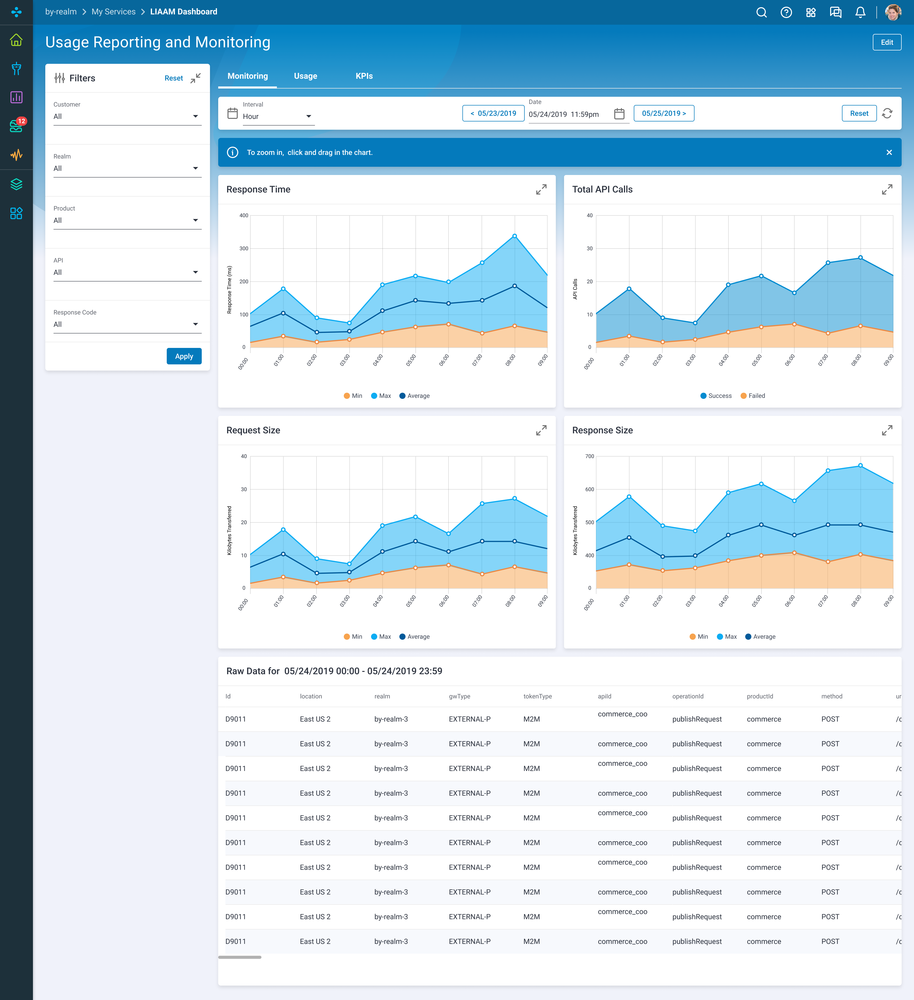

Blue Yonder
API Usage And Reporting Dashboard
One the thirteen scrum teams I supported throughout my time at Blue Yonder was the API Management team. One of the products I built for the team was a dashboard to monitor the health and status of their APIs. Until then, the operations team did not have a single place to monitor the health of their various APIs. Frequently, the team would only find out something was failing when a customer would call and point it out.
The goal of the API Dashboard was to give the API operations team a way to monitor the health of their APIs and surface problems before our customers noticed.
Kick Off
The kick-off meeting started with a surprise. The team requesting the API dashboard did not know what kind of metrics they wanted to see in the dashboard. This was unusual because I would usually get the requirements from the product managers and/or subject matter experts before I started a project.
For this project, I would have to do my own research into what an operations persona would wanted to measure and then develop the requirements from that. I would then have to review them with the stakeholders, and iterate over them before starting on ideation.
Process
For this project, I used the following process.
Research
Since the Operations team didn't know what they wanted, I had to do some competitive research on the web to see what metrics other operations teams captured in their dashboards. The following is a sample of the screenshots that I used for reference.
Persona
By now I had been working with various internal Blue Yonder teams, and I already had several personas I was able to look at for reference. For the Blue Yonder Operations persona, in addition to the goals I mentioned in the intro paragraph, the stakeholders mentioned some additional goals.
Blue Yonder
Operations User
- Wants visibility into API usage growth trends and stability.
- Wants visibility into business about top customers by API usage and can also insights into API retention for least use APIs (?).
-
Can help with answers to questions like:
- How many calls for this API during the last week broken down by 5min timeframe.
- How many calls and how much data was transferred by WFM [A Blue Yonder product] the previous week.
- How was the avg response time for our customer GEA for all their APIs the previous week broken down by hour.
- Wants visibility about LIAM [Luminate Identity and Access Management] adoption and also how the environments are being used by various customers/applications thereby triggering decisions like continuing/decommissioning any less used realms, etc.
- Provides visibility about LIAM adoption and also how the environments are being used by various customers/applications thereby triggering decisions like continuing/decommissioning any less used realms etc.
- Top customers by API usage.
- API retention for least use APIs.
- How many calls for this API.
- How many calls and how much data was transferred by WFM.
- How was the avg response time for our customer GEA [example customer] for all their APIs.
Analysis
I analysed the screenshots of the operations dashboards I found to see what kind of metrics they measured and what kind of charts they used, and what the articles where I found the screenshots said about the various types of metrics. I then broke them down into the following tables.
Dimensions to be captured from APIM for every call
| Dimension | Description |
|---|---|
| Timestamp | The time when the request reached the APIM |
| URI | The URI which used to register in APIM (usually first 2 to 3) |
| Version | The version used to register |
| location | The region of the APIGateway event |
| Http Method | The type of the HTTP Method used in the request |
| productID | The productID of the API call |
| apiId | the apiID of the API call |
| RequestSize | The size of the incoming payload |
| Realm | The realm of the request |
| AudClaim | The Aud Claim used in the request's token |
| CorrelationID | The correlation ID used for tracking |
| AGWCorrelationID | The app gateway correlation IT that was sent |
| Response Code | The http response code for the incoming request |
| Backend Response Code | The http response code from the point of view of the implementation |
| Response Size | The size of the outgoing payload for the request |
| Status | The success / failure status |
| Total Time | Response time of Total Processing time of the gateway |
| Backend Time | Response time of the implementation only |
| Calculated - GW Time | The difference of Total Time - Backend Time |
Aggregate dimensions to be captured from APIM
| Aggregate Dimension | Function |
|---|---|
| Interval Time | Time Interval |
| TimeTaken | Average |
| TimeTaken | Max |
| RequestSize | Sum |
| ResponseSize | Sum |
| Backend time | Average |
| Backend time | Max |
| GW Time | Average |
| GW Time | Max |
The aggregates should be grouped by
| Grouped By |
|---|
| URI |
| Realm |
| ProductId |
| apiID |
| location |
| status |
| http Method |
While I was able to catalog the data, I still wasn't sure what a lot of the metrics meant. I needed additional meetings with the stakeholders from the Operations team to make more sense of these measurements and to figure out which ones are captured by Blue Yonder, and which ones aren't.
One problem I've run into with many, many product and engineering people is that they struggle to provide feedback on the more abstract product design artefacts like customer journeys and personas. In a lot of cases, I won't get good feedback on features and requirements until I have translated them into wireframes or mockups. This was the case with this project as well.
When I discussed my findings with the Operations team, they weren't able to determine whether the metrics I had selected would make for a good set of measurements. I had to distill them into a set of screens with filters and charts before I would get useful feedback.
Dashboard
It took several iterations to go from an initial set of very rough charts to the final version below. During those iterations, the scope of the project expanded as we added additional filters to allow the Operations persona to drill down to a more granular view of the data.
Widgets
There were more charts than could fit in the mockups without making them unwieldy to review. So I broke out the various charts into widgets and requested the team add a feature to let users drag-and-drop charts as needed.


Conclusion
This project was an example of my ability to take unclear requirements from project owners and do the research to be able to provide direction to the project. API metrics was a domain I was inexperienced with. The Operations team, by comparison were deep domain experts in this area. Yet the team trusted me to do the research and develop a viable solution, one they were happy with in the end.
So, How can I help you?